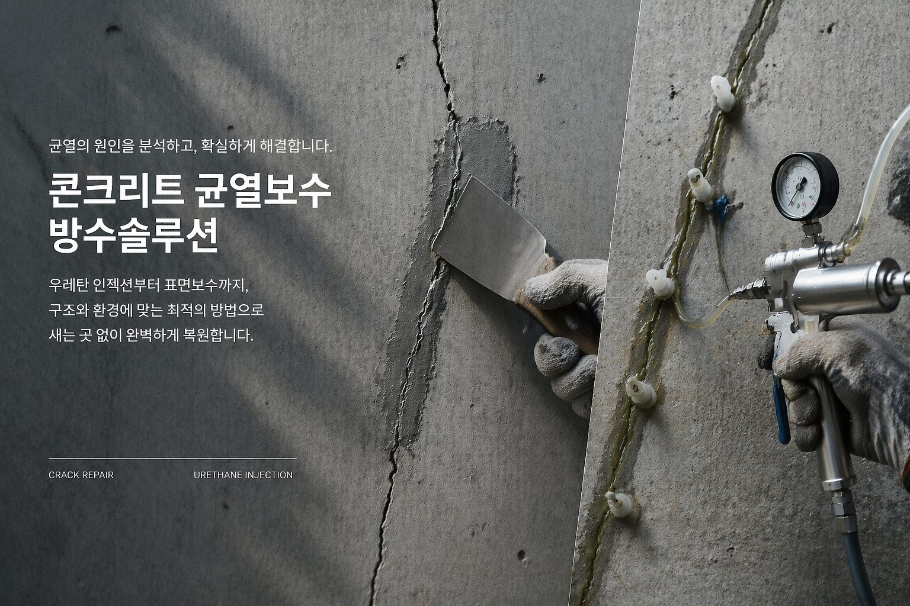

ARCHIVE
색상 및 질감 재현 — 조색은 현장에서
노출콘크리트의 색은 하나가 아닙니다. 같은 벽면에서도 위치에 따라 다른 톤을 읽어내는 방법과 조색 절차를 설명합니다.

먼저 톤의 범위를 정합니다
벽면 전체를 촬영하고 가장 밝은 부분과 어두운 부분을 확인해 톤의 폭을 정합니다. 보수는 평균값이 아니라 인접면 기준으로 맞춥니다.
건조 후 색이 진짜입니다
도포 직후와 완전 건조 후의 색은 다릅니다. 반드시 시험 도포 후 건조 상태에서 비교합니다.
질감이 색을 결정합니다
같은 색이어도 표면이 매끈하면 밝게, 거칠면 어둡게 보입니다. 색을 맞추기 전에 질감을 먼저 맞춥니다.